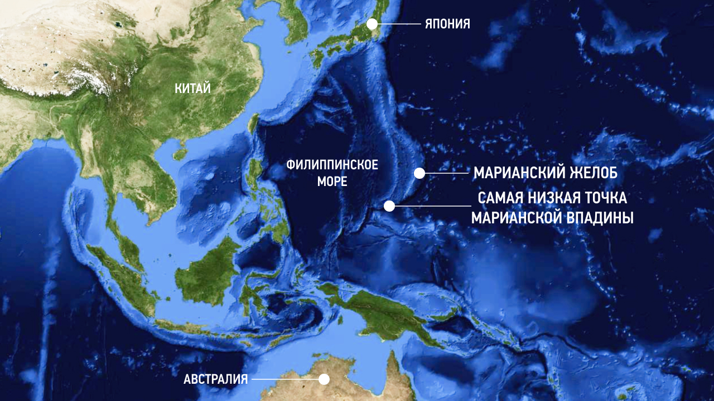

Maрианская впадина - это океанический глубоководный жёлоб на западе Тихого океана
находится рядом с
Марианскими островами (включая остров Гуам, расположенный в 320 км к северу) и островами Яп
Ближайшие страны/территории: США (владение Гуам) и Федеративные Штаты Микронезии.
Самая глубокая точка («Бездна Челленджера») 10994–11034 метра ниже уровня моря.
На поверхности ширина в среднем около 69 км, дно впадины плоское, шириной от 1 до 5 км
Назван по находящимся рядом Марианским островам.
Впадина имеет форму полумесяца длиной около 2540 км, средней шириной 69 км и глубиной до 11 км

На дне жёлоба верхний столб воды оказывает давление 1100 атмосфер, что более чем в 1071 раз превышает стандартное атмосферное давление на уровне моря.
При таком давлении плотность воды увеличивается на 4,96 %. Температура на глубине составляет от 1 до 4 °C